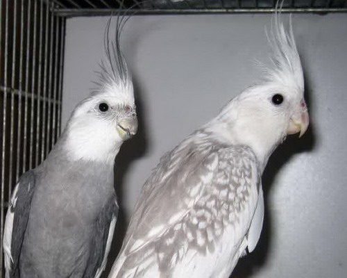
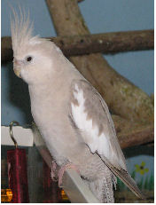

این سایت در مورد عروس هلندی میباشد

اصولا نژاد وایت فیس، به آن دسته از عروس هلندی هایی اطلاق شده که فاقد گونه ی قرمز رنگ باشند.حال برای تعیین جنسیت آنها
با توجه به عکسی که در بالا مشاهده می فرمایید، هر دو عروس هلندی موجود در عکس،نژاد وایت فیس هستند، منتها در عروس هلندی سمت چپ، که جنسیت نر داشته با عنوان وایت فیس طلقی شده ولی در عروس هلندی سمت راست (که وایت فیس هست) به دلیل خال ها و نقوشی که بر روی بدن وی قرار دارد نژاد مرواریدی یا ایزابلا شناخته می شود و علت نامگذاری وی می تواند نشان دهنده ی جنسیت ماده و نقش و نگار بر روی بدن او باشد...
:و اینکه چرا مرواریدی ها اکثرا ماده هستند
جوجه های حاصل از نژادهای وایت فیس با یکدیگر و یا وایت فیس با لوتینو به دو شکل ظاهر می گردند
اولا اینکه جنسیت نر وایت فیس ها تنها به صورت بدنی خاکستری با سری به رنگ سفید و فاقد لپ یا گونه ی قرمز هستند..(مانند عروس هلندی سمت چپ تصویر)
دوم اینکه عروس هلندی های وایت فیس ماده به دو شکل هستند:(به تصویر زیر دقت کنید:)
...عکسی از یک عروس هلندی وایت فیس ماده:که فاقد گونه یقرمز رنگ و صورت پرنده تیره و مایل به رنگ پرهای بدنش است
:پس به طور کل ما چهار نوع عروس از نژاد وایت فیس داریم
.نوع نر آن که دارای صورتی سفید رنگ و فاقد گونه ی قرمز و تمامی پرهای بدن خاکستری هستند(البته گوشه ی بالها سفید بوده)
.وایت فیس ماده که دارای گونه ای تیره ولی فاقد لپ قرمز
.نژاد مرواریدی که فاقد لپ قرمز و به همراه خال های خاکستری رنگ بر روی پرهای بدن وی
.ابلق های وایت فیس(تعیین جنسیت آنها بر اساس حالات و رفتار است)